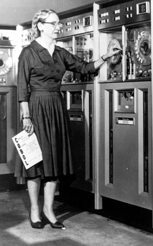

Biography
Grace Brewster Murray Hopper was an American computer scientist and United States Navy rear admiral. She is know as the "Queen of Code" & "Amazing Grace" for her innovations in computer programming.
Grace Hopper studied math and physics at Vassar College. After graduating from Vassar in 1928, she went to Yale University. She received a master's degree in mathematics from Yale in 1930. Hopper began teaching at Vassar while also continuing to study at Yale, where she earned a Ph.D. in mathematics in 1934.
Hopper enlisted in the Navy and graduated first in her class in 1944. She began her computing career when she was assigned to work on the Harvard Mark I team. At the end of WWII, Hopper served in the Navy Reserve and joined the Eckert-Mauchly Computer Corporation. It was here that she began developing the compiler. She believed that computer code could be written in English by using a programming language that was based on English words. The compiler would convert that code into machine code that would be understood by the computer. By 1952, the compiler was finished. The development of the compiler led to the creation of a machine-independent programming language, COBOL.
In 1966 Grace retired from the Navy Reserve, but it was then that the Navy recalled her to active duty to serve as the director of the Navy Programming Languages Group. She finally retired from the Navy in 1986 with the rank of Rear Admiral. At the time of her retirement, she was the oldest active-duty commissioned officer in the United States Navy.
The most damaging phrase in the language is: `It's always been done that way.'
-- Grace Hopper